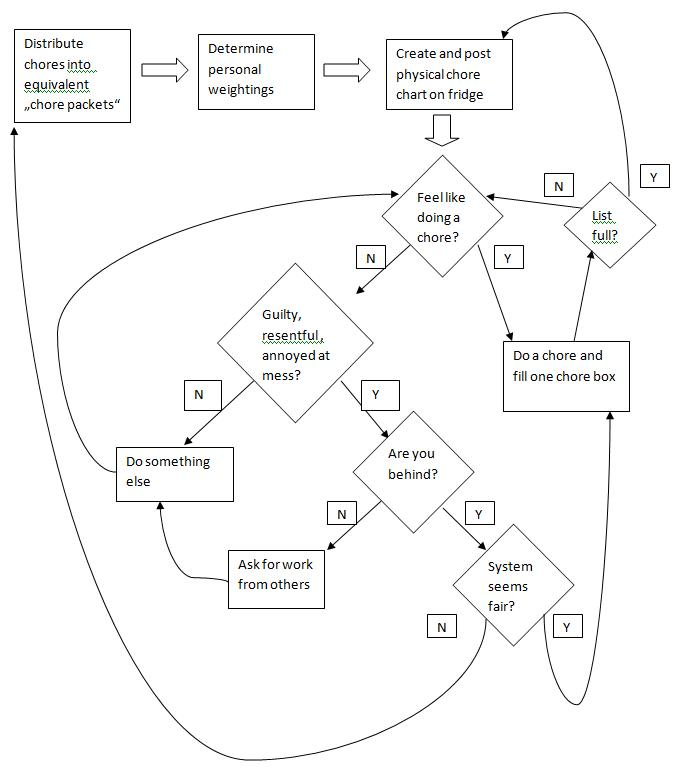

|
|
The Chore List
All right, I liked to a discussion of our chore list system esewhere recently, but the system has changed since then, and I realize I never answered Dan's question about it, and Mary Anne is having housework division troubles, so I think it is time for an update.
And since I am that kind of geek, I will document it as a Design Pattern
...after the cut:
(Update: it has come to my attention that in my attempt to be amusing and geeky and display this as a design pattern I have made it seem insanely complicated. But actually it's really simple:
- decide what counts as "a chore"
- decide who gets to do fewer chores based on age or work
- write down everything you do and keep a running count of who's ahead, forever.
Pattern Name and Classification: Weighted Lazy-Allocation Housework Chore List (a Household Metric Pattern)
Intent: Ensure equity in housework division and motivate housework providers by allowing everyone to do the housework they feel like, whenever they feel like, and providing cumulative tracking of housework accomplished.
Also Known As: "The List"
Motivation (Forces):
- No one likes to do housework
- Everyone wants housework to be done
- Everyone would rather do the kind of housework they feel like, when they feel like it, rather than some fixed task by a fixed deadline
- Fixed tasks and deadlines tend to generate guilt, defensiveness, resignation, and apathy
- Many forces, including differing task preferences, varied task granularity, different work schedules, unreliable memory, sexism, and other cognitively obscuring factors make it difficult in general to assess the equity of housework distribution.
- Any metric used must be extremely lightweight, flexible, and easy to use, or it will be ignored.
Applicability:
- Users of the pattern must be trustworthy
- Users of the pattern must be motivated to minimize the housework they do
- The pattern provides greatest benefit when its users are competitive, contentious, lazy, fair-minded, erratic, somewhat geeky slobs with differing approaches to housework.
Structure:

Implementation:
- Distribute chores into equivalent chore packets
- This means making a list of units of chore work, all of which will be considered equivalent: things like "put away one load of dishes" and "made beds" are each worth "a point on The List". This is a collaborative process: all household workers should be involved.
The heart of this system is determining chore equivalence: how much work is "one chore"? Chore equivalence is idiosyncratic. It needn't be based on the time a chore takes -- in our house, cooking (which is fun and lengthy) is one chore, and so is taking out the garbage (quick, but distasteful). Ideally chore equivalence is market-driven. If nobody ever cleans the bathroom, it's time to divide "cleaned bathroom" into "cleaned toilet" and "cleaned sink". The question to ask is: what is it worth to you? Would you be willing to wipe all the counters if it meant someone else would vacuum the den? Or should it be "vacuum the den and hall"?
- Determine personal weightings
- If one partner works full time and the other is stay-at-home, that does not mean the stay-at-home partner should necessarily do all the housework... especially if they are also watching children! But nor is it necessarily fair to require the office worker to perform, after dinner and before bed, the same raw number of chores that the stay-at-home partner can space out over a whole day spent in the vicinity of the sink.
In our household the ideal is that every adult have the same pressure to do housework while they are not performing remunerative labor outside the house. So we jig the ratio so that the person commuting to a day job is excused from housework for those hours spent commuting and working -- but only for those hours: not for the hockey game after work (stay-at-homes need to unwind too).
At present, both Esther and I work part-time; I work slightly more hours than she does. So the current ratio is that ten chores done by me are worth eleven chores done by Esther. We achieve this by, when we make a new list, putting an "x" (for "excused") in every eleventh cell in my column.
The kids are now on our chore list too. One chore done by Aviva is worth ten chores done by me, and one chore done by Noah is worth thirty chores done by me. There are also some smaller, kid-sized chores (like "set table") which count for kids but not for grownups.
Agreeing upon these ratios is also a collaborative process. If you don't have consensus, the system will fall apart. If consensus frays later, you need to renegotiate. If the system is working properly, no one feels resentful, generous, or guilty.
- Create and post physical chore chart on fridge
- Ours is a grid of alternating columns marked B and E, with a column each for A and N at one side. You enter into each cell the name of one chore -- perhaps a notation of the day or what meal -- just enough information to keep you from forgetting whether you wrote something down already, and no more. Because the B and E columns alternate, we can tell at a glance which adult is ahead.
- Feel like doing a chore?
- The system minimizes guilt and maximizes freedom. If you have a lot of other stuff going on, you can slack off a little and get behind. If you have a burst of enthusiasm for cleaning cupboards you can surge ahead. And it's hugely motivating to know that you are earning durable points which last forever. Suddenly having five minutes to spare before you have to go seems like an opportunity to get ahead on the list!
- Do a chore and fill one chore box
- You really do have to always fill them in. If you don't write them down, they don't count. Period.
- Ask for work from others
- While the system maximizes flexibility, it doesn't mean you get a free pass to get behind forever. The point isn't to remove all discussions about chores -- it's to make them extremely short. Where before you might have had a long argument about what's fair, now someone simply points to the list and says "get to work", to which it's reasonable to respond "I'm really busy now, but tell you what, I'll catch up by Sunday, ok?"
Traditionally, the person who is ahead on the list gets to put their feet up and relax with a cool drink after dinner, while the other person catches up.
With the kids, the rule is that if they are ahead on the list, we cannot make them do chores -- with the two exceptions that they must clean up messes that they make, and that in urgent situations (company coming, packing for vacation) they must pitch in and help. The freedom from being told what to do is so intoxicating, and we have taken it so seriously, that since putting the kids on the list they have always been ahead, Aviva usually by hundreds of points.
- System seems fair?
- The system invites periodic reassessment and reevaluation. If there are things that just aren't getting done, chore equivalence needs to be readjusted. If someone is feeling continually resentful, perhaps the ratio is off. After you get used to the system, these reevaluations become less and less frequent.
- List full?
- Here is an absolutely crucial aspect of the list (and probably its most sexism-resistant feature): it is cumulative forever. There is no "reset" at which point you start from zero. If you are behind, catch up. This means that when the physical piece of paper is full, and you take it down from the fridge to start a new one, you transfer the leader's lead as well.
Thus, if, say, Esther is 20 ahead on the list when it's time to put up a new one, I write twenty "x"s in the first twenty cells in her columns. (For the kids, we generally note the number of carryover points at the top of their column, since it is sometimes very large).
Sample Code:
Here's how the list on our fridge might look on a given day. In this example, when this physical chore list sheet was drawn up, Aviva started out leading by 234 points more than Ben, Noah 72 more than Ben, and Esther 5 points more than Ben:
| Noah(x30) +72 | Aviva (x10) +234 | E | B | E | B | E | B | E | B | E | B |
|---|---|---|---|---|---|---|---|---|---|---|---|
| wiped table | made cream of wheat | X | lunch | tidied | kitch. floor | beds | |||||
| picked up toys | set table | X | tidied | dinner | balc. floor | ||||||
| stairs | X | breakf.(Mon) | beds | tidied | |||||||
| attic | X | organized closets | beds | dishes in | X | ||||||
| made pie | X | lunch | dishes out | X | |||||||
| dinner | dishes in | beds |
Note Esther's Xs transferred from the previous list, and Ben's Xs to adjust the ratio because he works slightly more hours at day-job work.
In this example, at the point in time we are observing the list, Esther is now ahead (of Ben) by 2, Aviva is now ahead (of Ben) by 273 (234 + 50 - 11), and Noah is ahead (of Ben) by 121 (72 + 60 - 11).
Known Uses:
Besides us, we have here a data point from JessieSS. If anyone else adopts this system, let me know!
Related Patterns:
None at present, but the Interpersonal Patterns Repository is just getting started here!
Posted by benrosen at June 5, 2008 12:00 PM | Up to blogIt seems like a good system, but not one suited to our household. For one thing, we would spend more time negotiating over the value of chore units than we do chores, and call for renegotiating them every two weeks or so...
I'm curious--does your system allow for different weights for chores depending on who does them? For instance, vacuuming is a minor chore for me, but a major one for my Best Reader; if I do the chore as I am supposed to, it would be only one Chore Unit, but if for some reason I left it undone when we were expecting company and she had to do it, I would be half-a-dozen behind at least.
This has serious implications for managing the system. We largely have divided tasks to the person who dislikes it least: I do laundry and dishes and vacuum and make out the cheques, she cooks and mows the lawn and mends and shops and reminds us not to be late for things. This is obviously the best way, as it minimizes anti-hedons, but when one partner leaves a task undone (as occasionally happens), it maximizes both frustration and guilt. That's a drawback, but perhaps a necessary one.
Thanks,
-V.
Wow, apparently you're even more contentious than we are. But as long as you've got something working for you...
We do not allow different weights depending on who does which chore -- with the exception of allowing some kid-sized chores for kids. Partly, we just want to minimize complexity, and partly, to minimize anti-hedons as you say, we want to encourage people to do the chores they like to do. And judging who hates doing something more seems fraught with subjectivity, as well as blunting the system's self-correcting feature (that a task no one chooses to do in practice gets weighted more heavily until someone does it).
But of course, anti-hedons must be assessed in context. If you hate vacuuming and like to leave it for your partner to do, but you hate having your in-laws visit your unvacuumed apartment MORE than you hate vacuuming, then you may have to vacuum if a visit is pending and you are behind on the list. No guilt or frustration needed, just minimizing your own personal store of anti-hedons. The list just formalizes whether you have the leverage to get sweetie to do it for you instead.
Posted by: Benjamin Rosenbaum at June 5, 2008 09:01 PMI just read a slightly interesting article on shared parenting and housekeeping ("slightly" because it's kind of old-news-y and filled with defensive IMHO backsliding), which reminded me of this question: did you have this system before having kids, and how did it carry over?
I mean possibly the answer is "our childcare division of labor was fully satisfying and so we just had to adjust to the difference in hours worked." My house's system fell apart when we settled into our non-equal, non-satisfactory division of childcare hours, so I was curious if you adjusted for that or just didn't do it. Maybe we'll start the chore list again in the fall when daycare begins.
Posted by: JessieSS at June 12, 2008 06:58 PMWell, I gotta tell you: I think this list is a pretty solid answer, for us, to the problem of housework. I am not necessarily claiming it is an answer to the problem of childcare.
We had been using some variant of this list for four or five years before we had children. We basically kept right on using it.
The labor of childcare has two parts. One part is simply increased housework which is similar to other housework: kids throw mush on the floor, they draw on the walls, they go through five pairs of pants in a day.
But another part is not really reduceable to housework. Bathing the kid? Singing "the itsy bitsy spider" while diapering? Reading a book together? Having a debate about gay marriage (a perennial debate topic for Aviva and me)? It's a slippery slope, because some of these activities look like housework, sort of, but others don't, but they're all kind of the same thing, so where do you draw the line?
We essentially excluded all varieties of "giving love to children", from bathing them to singing to them to oohing and ahhing over their artwork, from the whole equation. For one thing, we felt icky rewarding ourselves with points for giving love. For another, while we would fight about who had to do the housework, we would fight about who got to be with the kids. We figured there was enough intrinsic incentive to do that, less onerous, part of childcare.
If any particular category becomes a particular pain in the ass, you can always say "let's start putting that on the list". Say you had initially categorized arranging babysitters and playdates under "taking care of the kids", but then you realize that it's actually just scutwork, and not about quality time at all -- then you can make it a chore item, if you can find an appropriate granularity ("organized 5 playdates").
Now, it is undeniable that this is a place that sexism can creep back in, and surely has, despite our best efforts. If one parent is out playing sports and the other is home with the kids, well, the one who's home is probably doing housework and thus getting ahead on the list and thus earning more time out... but arguably not at the optimally fair rate, if they spend a lot of that time reading bedtime stories and intervening in disputes instead of things that "count" on the list.
But nor would it be fair the other way -- I can tell you right now that if childcare counted on the list as chores, it would destroy the usefulness of the list for us.
The way it is now, if the kids and I spend my stay-at-home-daddy days one week building homemade telegraphs, watching The Wiz on youtube, and making up songs, then I get way behind on The List, and the next week I am all about organizing the kids into cleaning squads. But if I got points for the romping? The household maintenance would go to hell.
So instead of corrupting our housework equity system, we end up adjusting non-housework-related unfairness at a much more crude granularity ("I've been doing the brunt of evening childcare, so from now on Wednesdays are my night off").
It's not as elegant, but it works reasonably well. Having the housework, at least, be fair is, to be frank, most of the battle. Childcare is, I think Esther would agree, mostly its own reward.
I feel like half the conversation is here and half is over at Mary Anne's! But I think I've identified where we diverge--it sounds like you guys have worked out a balance where you can get your work done, at least enough that it's not a major stress. Whereas right now in my house, childcare is often competing with work (professional, not house). That makes both work and childcare less pleasurable, and that's a much more significant conflict than housework at this point. And many chores are much harder to do with V. around, so childcare and chores can't be decoupled.
My hope is that this balance will work itself out when V. starts daycare in the fall, both because it's more hours and, more importantly, because it won't go away for three weeks at a time to visit family and renew its visa. I'm totally sympathetic to our sitter, you understand, I'm just also terrified about my third chapter. That takes the fun out of a lot of things.
Posted by: Jessie at June 26, 2008 07:55 PM